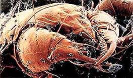

Глава в работе, следите за «Ключами» на моей страничке, при
возможности я буду их корректировать и дополнять. Готовую работу я утратил,
поэтому пишу заново в последний момент.
Эта система коррекции обмена веществ была мной окончательно
собрана и опробована как единое целое в 1989 году на моей родной планете Тере,
и является составной частью программы «Колыбель». Эта система питания была
первоначально рассчитана на однократное применение, для создания необходимых
условий в процессе трансформации тела по программе Реверса Генетического Кода
Человека (РГКЧ). Жаль, что нет времени подробно рассказать об этой разработке,
я даю здесь лишь краткое обоснование системы и объясняю принцип её работы, в
следующий раз предоставлю подробное описание с рекомендациями.
«Ключи» были созданы для ручного управления обменом веществ, но
для 100% контроля необходимо выполнить ещё несколько условий. Нужно изолировать
человека от атмосферного азота, нужна электроплазменная колыбель, препараты
блокирующие опиатные рецепторы, обеззараживающие медикаменты и многое другое.
Без отключения гомеостаза (динамического равновесия химического состава, в
процессе обмена веществ) воспользоваться «ключами» на 100% нельзя, ведь эти
условия можно выполнить только в условиях лаборатории.
В бытовом варианте этот комплекс питания позволяет достаточно
эффективно бороться за своё здоровье, долголетие и независимость от
микробиологического комплекса Судьбы. Эта система питания, с гигиеническими процедурами
и антисептиками растительного и синтетического происхождения, позволяет корректировать
гомеостаз. Она позволяет понижать гормональный статус тела (понижает уязвимость
от слабого пола, как у мужчин, так и у женщин), даёт возможность эффективно противостоять
иммунной системе организма. «Ключи» позволяют понижать активность
микроимплантантов (митохондрий, лизосом, макрофагов, лимфоцитов и т. д.), что
способствует усилению саморегуляции и самозащиты тела на клеточном уровне,
способствует усилению регуляторных функций мозга, взамен встроенной в тело
автоматики. «Ключи» позволяют наблюдать за своим телом и отбраковывать
отравленные и модифицированные врагами продукты питания, методом проб и ошибок.
Она позволяет чувствовать различные добавки, микробиологическое вторжение извне
(по головной боли, процессам брожения в животе и другим факторам, в норме этого
не происходит). Система позволяет избавиться от наркотической, табачной,
алкогольной, сексуальной зависимости и многое, многое другое.
Система создавалась с расчётом на применение простыми людьми с обычной силой воли, любой национальности, пола, и места проживания (с редкими исключениями). Система частично автоматизирована, поэтому мои рекомендации, выполнить не сложно и ошибиться трудно, если следовать всем предписаниям.
Немного о принципе работы «Ключей»: Большинство из общедоступных
продуктов питания на планете, я поделил на 7 групп. Они делятся по химическому
составу, и соответственно по частотно-амплитудным характеристикам (по
доминирующим в них компонентам). Группы продуктов, разбитые по этим характеристикам,
исходят из продуктов 3-х типов: 1 – кислотных (красный),
2 – щелочных (зелёный), 3 – углеводов (синий). Этим типам продуктов, с их
частотно-резонансным и химическим составом соответствует определённый цвет.
Например: Кислотным продуктам соответствует – красный
цвет (красный), щелочным – жёлто-зелёный (жёлто-зелёный),
углеводам – сине-фиолетовый (сине-фиолетовый).
Полная гамма продуктов по частотам, представлена семью резонансными
(частотно-амплитудными) группами. Они определяются семью цветами радуги: Каждый (красный) Охотник (оранжевый)
Желает (желтый) Знать
(зелёный) Где (голубой) Сидит (синий) Фазан
(фиолетовый). Этим цветам радуги, соответствует гамма звукового ряда: До, ре, ми, фа, соль, ля, си. Из этих химических нот, создаётся музыка «Семи
ключей радуги», которую так давно не слышали ваши тела. При питании продуктами
от красного к фиолетовому цвету (от «до», до «си») уменьшается амплитуда и
растёт частота обменных процессов и изменяется химический состав веществ,
участвующих в обмене на клеточном уровне. В организме постепенно уменьшается
температура, потребление кислорода митохондриями, содержание азотистых
соединений, различных солей так же падает. (Затем их уровень поддерживается
автоматически на оптимальном уровне, при соблюдении норм питания). В организме,
в процессе использования «Семи ключей радуги» растёт потребление углеводов,
происходит выброс азотистых соединений, с ними выпадают из внутриклеточного
резонанса микробы, вирусы, химические загрязнители, выходят кислоты, излишний
кислород, вода. ✫ Содержание воды в теле, может упасть до 30%, вес тела при этом
может уменьшиться до 15 килограмм, без изменения оптимального объёма, если вы к
нему уже пришли. Такие изменения, я и мои приятели, почувствовали в начале 90-х
годов в процессе экспериментов, когда удалось временно отключить механизмы
торможения; гомеостаз, иммунитет и другие цепи. При нынешней системе адаптации
без дополнительных мер этого уже не достичь. ✫ Тело начинает восстанавливаться, тысячелетия
инволюционных процессов, определяемых имплантантами (клановыми заквасками и
вирусами) выпадают с дыханием, потом, мочёй, калом и другими выделениями
(многие микробы при этом сильно матерятся и пищат). Электрическая активность
мозга возрастает, радужная оболочка глаз синеет, активность других клеток тела
также возрастает, национальные и половые признаки отступают, мир окружающий
вас, постепенно становится реальным и живым.
Очищение тела идет глобально на клеточном уровне. Клеточный метаболизм
изменяется в сторону упрощения, уходя от химического митохондриального
энергоснабжения основанного на примитивных тепло электрических реакциях и
маразме АТФ. В клетках тела постепенно начинает доминировать электроионная и
электромагнитная энергетика, с редким восполнением углеводов для восполнения
соединений углерода (углерод необходим для захвата нейтронов из окружающего
пространства). При максимальном действии системы происходит регенерация органов
(наблюдается отрастание ранее утраченных ног, рук, глаз, зубов и прочих
мелочей), это произойдёт при использовании программы «Колыбель» в полном
объёме, но у многих людей, подобные явления в малой степени могут наблюдаться и
при использовании усечённой версии системы (такие явления наблюдались неоднократно).
✫ Эта
система прошла апробацию в разных странах, на различных национальных группах
людей. Основная, первичная апробация прошла на мне и моих приятелях в России,
Белоруссии (в зонах поражения радиацией), затем «Ключи» успешно применялись в
Польше. Я благодарен священникам многих католических приходов и простым жителям
этой замечательной страны, за содействие и помощь в пропаганде и популяризации
«Семи ключей». Отсюда, из этой страны мои идеи выпорхнули в мир, частично реализовавшись
в к/ф. «Матрица». Я благодарен; врачам, биологам, учёным, писателям,
журналистам и художникам Польши, за помощь в моей нелёгкой работе. ✫
Обычно, на автопилоте Судьбы, человек от зачатия до смерти живёт
(его клетки) от фиолетового цвета (автотрофного метаболизма за счёт углеводов)
к красному (гетеротрофному обмену веществ за счёт чужеродных белков). На этом,
красном цвете, человек живёт большую часть жизни, на нём он и умирает (вот где
надо иметь железное здоровье, столько жить на грани смерти!) Я попробовал и
предлагаю вам, попробовать развернуть биологическое время и старение вспять,
конечно, как я уже предупреждал, эффективность «Ключей» без комплекса не
велика, но даже в таком варианте применения система ранее позволяла творить
настоящие чудеса.
Сейчас я расскажу о продуктах, которые составляют цветовые гаммы,
а затем, расскажу, как их правильно применять. Очерёдность продуктов в списках
соответствует относительной химической сложности и опасности этих продуктов для
человека.
✯ (красный) В этот цвет входят:
Грибы, дрожжи, все продукты животного происхождения: молоко, все масломолочные
продукты, яйца, мясо любое, все мясные продукты, все рыбные и море продукты не
растительного происхождения. ✫ Например: если перечисленные выше продукты содержаться, например,
в овощном салате (майонез, если не соевый), не зависимо от количества, – салат
уже относится к красному цвету (хотя он находится на желтом спектре системы).
Ещё пару примеров: не дрожжевой хлеб (оранжевого спектра) содержащий яйца,
молочные продукты, мясо, относится к красному спектру. Яблоки (яблоки зелёного
спектра) с жареной уткой тоже красный цвет. ✫
✯ (оранжевый) В этот цвет входят:
Соевые продукты, соевое мясо (не использовать соевый сыр, он, по новой
технологии заквашивается сычугом – овечьими трихомонадами и их ферментами,
оптимально использовать сухое молоко или на худой конец – майонез, узнайте, что
в его составе). Отличный продукт при переходе от животной пищи, к растительной
еде! ✫
Примечание! Важно для мужчин завязавших или желающими завязать с сексом, пивом,
вином и женской кухней: На соевые продукты мужчинам желательно не налегать,
особенно при уходе от зависимости в животных белках – о прекращении зависимости
вы узнаете первыми. Негативный аспект замечательного и питательного продукта вы
почувствуете при возврате питания по системе, когда, сделав круг по радуге, вы
вернётесь к оранжевому цвету, ведь в организме (особенно у мозга) увеличится
чувствительность к гормонам, токсинам и различным загрязнителям (всему своё
время!). Дело в том, что в сое, содержаться аналоги женских гормонов, очень
сильные (сбивают работу мозга!), вызывают устойчивую головную боль (если вы
изменили свою жизнь в описанной выше форме), не пугайтесь и помните, что
свойства продуктов в моей системе-гамме относительны! (Пиво, вино и секс – страшнее
водки, а колбаса безопасней грибов!)
При
потреблении пива, мяса, молочных продуктов соя безвредна и очень полезна, и
женский гормон (эстраген) мозгу не помеха! (Мозг при таком питании и так не
работает, и уж тем более уже практически не может болеть.) Эти рекомендации по
эстрагену неактуальны при возврате к обычному питанию людей, с мясными и
молочными продуктами, если вы собираетесь и дальше их заглатывать, то с соей
проблем не будет, вы получите замечательную прибавку к своему рациону, не
верьте истерике о мутантной сое. (Вас ведь не смущает колбаса из вонючих
мутантов или продукты из мутантной конопли или мака, больший грех всегда
закрывает меньший). Ферменты, содержащиеся в сое, эффективно расщепляют любые
животные белки, способствует их перевариванию и усвоению. Многим людям соевые
продукты сразу покажутся невкусными, но на третий раз могут сильно понравиться
(аж за уши не оттащишь). Они очень калорийные и полезные, быстро насыщают
организм. ✫ Затем идут бобовые культуры; бобы,
фасоль, горох, чечевица (у чечевицы хороший химический состав и вкус).
Продолжают цепь носители сложных растительных белков – орехи: арахис, грецкие,
фундук. В ореховый раздел так же входит кокосовая стружка (не крашенная),
кедровые орешки, семена подсолнечника. Этому спектру соответствуют различные
злаки; кукуруза, пшеница (пшеничные продукты разных видов; манка, перловка...).
✫
Перловка содержит много молибдена, поэтому ею не стоит увлекаться, есть можно,
только так, для разнообразия. ✫ Так же в эту группу входят; пшено,
овёс, рис, картофель, гречка (очень ценная крупа). Различные растительные
масла, сначала соевое масло, кукурузное масло. ✫ В кукурузном масле много золота, его ионы очень опасны для
человека, но понемногу это масло потреблять можно, помните в моей системе всё
относительно мясо и грибы опаснее рыбы, а рыба опаснее помидор или яблок. ✫ Затем идёт кокосовое масло. ✫ Оно твёрдое, типа
свиного смальца, если взбить с рафинированным маслом, солью и водой, получится
заменитель бутербродного масла (для тех кто страдает по бутербродам хорошая
психологическая поддержка). ✫ Затем, идут оливковое, подсолнечное
масло, желательно использовать масла только российского производства (без
наркотиков, красителей, животных жиров и аминокислот, и подобной дряни, это
относится ко всем продуктам). ✫ При сильном нагревании на сковородке, подозрительные масла такие
как «Филёвское» подсолнечное и многие другие, издают неприятный запах животных
белков и жирных аминокислот. ✫ Годятся в пищу не рафинированные –
«колхозные» масла, они должны быть просто приятны на вкус и с хорошим запахом. ✫ По любому, они не так
опасны, как многие фабричные в красочной упаковке, но с различными добавками. ✫
Самодельные овощные соки: томатный, тыквенный или «колхозные» наши (проверенные
на вкус и на реакцию желудка, «наши нашим» – рознь!). Фруктовые соки: наши с
проверкой (в «колхозных» банках) или лучше самодельные (без контакта с руками
при приготовлении, это относится ко всем продуктам). А проще если нет времени
для приготовления соков или при их отсутствии, пейте чай («Майский», хотя
нормального уже не найти), чай из зверобоя, мяты, вызывающую доверие минералку,
круто кипячёную воду (10-15 минут, до разрушения бактериальных белков и
химикатов) или не кипяченую из проверенного родника.
✫ Примечание: Почти все добавки (красители, подсластители,
усилители запаха, прочая химия и различные компоненты из бактерий и простейших
водорослей) на поверку попадают в разделы опасных для человека веществ. Они
являются или наркотиками (корректорами сознания, молекулярной рекламой, - они
заставляют покупать этот продукт и т.д.) или близки к боевым отравляющим веществам
или их компоненты используются для ведения частотно-резонансной обработки
противника. Большая часть их специально разрабатывалась для ведения войны
против России и других славянских стран. Импортные, и производимые у нас соки,
типа «Любимый сад», различные напитки типа «Кока-колы» и прочей гадости,
содержат в себе лишь натуральную воду и то не всегда. Думаете, почёму нельзя
пить, «ведь пропускают к нам в страну, значит пить можно…». Скажу одно,
пропускают отравленные продукты в страну те, кто с врагами заодно, те кто
окончательно потеряли совесть или никогда её не имели. Люди государевы продали
нас за сантики и шекели в фунтах стерлингов, это такой бизнес на нашей крови.
Родные, в условиях войны будьте бдительны! Потребляйте только те продукты, в
которых хоть немного уверены! ✫
✯ (жёлтый) В этот цвет входят все
овощи: тыква, любые сорта капусты, помидоры, болгарский перец, огурцы, кабачки,
морковка и другие овощи. В небольших количествах потреблять редиску, редьку,
свёклу и другие подобные корнеплоды, – в них много нитратов. Не старайтесь
брать любые большие овощи в них больше нитратов, а это топливо для трихомонад и
прочей сопутствующей заразы. В этот цвет входит, лук, чеснок, перец разный, любая
зелень. На этом цвете, ещё пока используются растительные масла без особых
ограничений, на следующем цвете их просто нет. Сюда же входят ягоды и бахчевые
культуры. ✫ Опасайтесь арбузов, особенно ранних, уровень нитратов и всякой
заразы очень высок (бывали даже смертельные случаи при отравлении). Арбузы сами
по себе ловушки опасных для человека соединений азота, которые могут дать силу
микробам для большого погрома в вашем теле. ✫ Напитки: Самодельные овощные соки
или наши (проверенные на вкус и на реакцию желудка) томатный, тыквенный.
Фруктовые соки: наши с проверкой (в «колхозных» банках) или лучше самодельные
(без контакта с руками при приготовлении, это относится ко всем продуктам). А
проще пейте чай («Майский», хотя нормального уже не найти), чай из зверобоя,
мяты, вызывающую доверие минералку, круто кипячёную воду (10-15 минут), или из
проверенного родника, не лишним будет бросать в охлаждённую воду, кремний,
серебряные вещи и настаивать для активации и дезинфекции (на любом цвете). Если
нет жажды, лучше вообще не пить.
✯ (зелёный) В этот цвет входят:
различные цитрусовые, фейхоа, киви, бананы. Далее идут; сливы, вишня, черешня.
Так же шелковица, виноград, персики, абрикосы, груши и яблоки. Напитки:
самодельные фруктовые соки, чай из зверобоя, мяты, минералка, круто кипячёная
вода (10-15 минут) или родниковая. Если нет жажды, лучше вообще не пить.
✯ (голубой) В этот цвет входят:
сушёные бананы, курага, финики, инжир (перечисленные продукты можно есть не
более половины цикла), далее желательно только изюм он максимально подходит по
параметрам и содержит минимум различных микробов. Напитки: чай из зверобоя,
мяты, минералка, сильно кипячёная вода, родниковая. Если нет жажды, лучше
вообще не пить.
✯ (синий) В этот цвет входят: мёд,
медицинский спирт высокой очистки (по чайной ложке, пару раз в день, по желанию
и ощущению можно не потреблять). Мёд должен быть не очень ароматным,
жёлто-оранжевого цвета, лучше густой, с кристалликами. Вкус у мёда должен быть
не очень терпким, просто сладким. Напитки: кипячёная вода, дистиллированная серебрёная
вода.
✯ (фиолетовый) В этот цвет входят:
глюкоза в порошке, кипячёная или дистиллированная вода.
В этих гаммах я описал основные продукты и оговорил их качество,
если какие упустил, добавлю, сами не
экспериментируйте, это даёт почву для искушений и искусаний, –
чем-нибудь закусить запрещённым и не своевременным.
Система рассчитана на 1-1,5 месяца (при обычной скорости обмена
веществ, как у вас) и по очистительному эффекту подобна 40 дням голодания. ✫ Голодовка не
затрагивает многих аспектов питания клетки, имеет множество других негативных
моментов. В своей работе я использую голодовку как радикальное средство на фоне
применения «Семи ключей». Рекомендую начинать попытки голодания лишь после
очистки организма по моей системе – после оранжевого цвета (на фруктово-овощном
цикле). Нужно начать попытки с суточной голодовки в неделю, затем можно
использовать сухую голодовку до трёх дней (больше не стоит!) без потребления
какой-либо жидкости (не бойтесь, количество исходящей мочи значительно может
возрасти). ✫
При использовании перечисленных продуктов, нужно выполнять
следующие рекомендации:
Не потреблять вина, пива, химических напитков, в небольших дозах,
иногда, можно самодельный коньяк (спирт на ореховых перегородках или дубовой
стружке), очищенную марганцовкой водку или спирт с самодельным фруктовым
сиропом.
Если вы применяете какие-то сложные и важные для вашей жизни
лекарства; посоветуйтесь с врачом, можно ли снизить дозу или временно отложить
их для пробы. При возможных периодических болях в сердце рекомендую
использовать «Корвалол» – это сильное, натуральное лекарство, быстро снимает
спазм.
Продукты питания овощи, фрукты, особенно крупы, надо промывать в
растворе марганцовки (рекомендую: овощи фрукты как в советское время, мыть с
хозяйственным мылом – не ленится). Особенно важно знать женщинам: нужно
избегать контакта пищи с голыми руками (использовать перчатки). Лучше всего,
если вы в состоянии это делать, готовьте себе сами, тогда гарантировано пища
будет иметь наивысшую ценность для вас, а не будет отбирать последние силы, как
это происходит на семейной кухне – невидимую микробиологическую войну в семье
никто не отменял. Освоить приготовление простой здоровой пищи не сложно, об
этом знает каждый мужчина, кто хоть раз попытался это сделать, главное начать,
а там, глядишь, родных от вашей еды не оттянешь. Мужчины, освободите своих
подруг от кухни! – Готовка не женское дело (впрочем, как стирка и уборка), помните,
кто в семье готовит, тот и правит.
✫ Слабый раствор марганцовки подходит и для борьбы с внутрикишечной
инфекцией и повышенным содержанием токсинов, раствор марганцовки своим активным
кислородом восстанавливает работу кишечника, модулирует иммунную систему.
Бывает достаточно одного стакана раствора марганцовки, для подавления кишечной
революции – поноса или метеоризма. Осторожно, при высокой концентрации (темнее
розового цвета) марганцовка опасна для вашего здоровья, будьте внимательны.
Вторым важнейшим фактором для поддержания новой микрофлоры желудка и лечения
организма от различных заболеваний, отлично себя зарекомендовал АСД
(антисептический стимулятор Дорохова, на моей страничке вы найдёте подробную инструкцию
по пользованию препаратом.). Для наружного применения хорош «Демексид», его
можно использовать для компрессов, лечения порезов, ушибов, ревматических болях
и других подобных вещей (смотрите инструкцию по использованию), раствор
перикиси водорода, раствор гипохлорида.
Несколько
важных советов по гигиене: Для очистки посуды, помещений, мытья полов, столов,
стульев, рекомендую «Доместос», «Белизну».
Для борьбы с грибками, сапрофитами и другими тварями в вашем жилище
периодически используйте готовые серные шашки, или жгите серу, смешав её с
мелкими древесными опилками (не забудьте вынести продукты питания и цветы из
помещения). Чтобы стены в вашем жилище не ДЫШАЛИ грибками, миазмами бактерий и
других паразитов, обработайте стены с помощью пулевизатора – вода + клей ПВА,
покройте несколько раз (можно с обоями – они станут моющимися). Весь
многосотлетний миф Дьявола «О ДЫШАЩИХ СТЕНАХ» уйдёт из вашей жизни вместе с
половиной болезней – ДЫШАТЬ ДОЛЖЕН ЧЕЛОВЕК!
Для дома «без миазматических приведений», вполне хватит нормальной
вентиляции и проветривания (пресеките попытку знакомых нести дезинформацию
«мол, стены должны дышать…» и сразу почувствуете себя сильнее и мудрее). Если
нет возможности часто очищать габаритные паласы и ковровые покрытия от паразитов
(сапрофитов, трихомонад и прочих тварей), – научитесь жить без паласов и покрытий.
Со вкусом подобранный линолеум просто содержать в чистоте он не аккумулирует
заразу и грязь.
И
ещё, ради жизни, замените перьевые перины, одеяла и подушки на синтетические, в
«родовых» и магазинных клоповниках – поколениями живут ваши враги, они своими
миазмами контролируют сон, показывают кошмары, слипают глаза по утру, раз за
разом забирают зрение и жизнь. Представьте себе такой видео ролик. Человек
несчастного вида, пытается проснуться, хочет оторвать голову от шепчущей
сладкие любовные речи подушки, и из неё вылезают огромные куриные лапы с
когтями, и до крови вцепляются в горло и в глаза, и тянут назад в страну
наркотических грёз Морфея…. Страшно? –
Зато, правда! Да, кстати, и духи убиенных кур не в восторге от традиции надругательства над останками их
тел уже тысячи лет…. В подушках гремят
семейные узы, – пищат миллионы ракообразных сапрофитов, миллиарды бактерий ждут
вас каждый вечер, чтоб рассказать вам одну из сказок о смерти. Перья –
идеальный материал для микробиологического колдовства и чародейства! ✫
Первый цикл соответствует красному цвету – это полная всеядность.
Возможно, вы сейчас именно так и питаетесь, поэтому начните со второго цикла.
Фактически независимо от того, как вы питаетесь, система и начинается со
второго цикла.
За 5-10 минут перед каждым приёмом пищи желательно съесть одну
чайную ложку меда (чтобы окончательно испортить аппетит). Эту рекомендацию, по
возможности, нужно соблюдать до цикла фруктов, затем его можно просто есть
понемногу, но смотрите; мёд вам ещё может надоесть. Пить нужно как можно меньше жидкости, и только когда испытываете
жажду, не пейте за компанию, по привычке и потому что вкусно. (Не удивляйтесь,
если уже на желтом, или зелёном цикле, не будет хотеться пить по 2-3 дня).
Принимать пищу при питании по системе можно столько раз, сколько
вам будет необходимо, любое количество раз, чтобы не чувствовать голода. Не
ешьте от жадности или по привычке, следите за своими ощущениями. Вы можете
спокойно есть (с учётом сказанного) не боясь при этом поправиться или засыпать
с наполненным желудком (это вам не мясо и молочные продукты).
Но, не забывайте, можно есть только ту пищу, которая соответствует
вашему циклу, тому, на котором вы находитесь в данный момент. Первые 2-3 дня
может хотеться есть очень сильно, ешьте больше, затем организм сбалансируется.
Из перечисленных продуктов можно готовить любые блюда, в различных
комбинациях, не нарушая границ этих групп. В порядке исключения, в первые пару
дней, начала фруктового цикла, можно есть орехи; грецкие или фундук, они вас
поддержат на духу (к тому же они слабо перевариваются и выгодно слабят
кишечник). Основным питанием цикла являются те продукты, которые ему
соответствуют. Дополнительно можно есть все, что можно будет, есть на
последующих циклах, но нельзя есть то, что было на предыдущих! Но лучше
держаться разграничения. Это дешевле и продукты будут работать гораздо эффективнее.
Это правило важно, так как если вы по забывчивости или по другим причинам
съедаете что-то, чего есть нельзя, эффект системы теряется, нарушается
частотный резонанс и надо начинать все сначала.
Момент перехода на следующий цикл определяется индивидуально.
Делается это таким образом: пока вы питаетесь по системе, нужно собирать мочу в
баночку, для контроля процесса очищения, но лучше в две. Одну наполняете,
предыдущая баночка уже стоит, ждет проверки. Моча в ней оседает, в ней
структурируются и разделяются различные вещества, проклёвываются различные
споры микроорганизмов, прорастают грибы. При таком сборе мочи, её будет легче
анализировать на цвет, консистенцию, запах и вкус (нет, пить не надо, просто
пальцем и на язык, так вы и ваш организм поймёт, что с вами происходит и что
делать дальше). Обычно происходит следующее: первые один-три дня моча имеет
обычный цвет. Затем, она начинает темнеть, мутнеть, моча обретает очень сильный
запах – идет процесс очищения. Моча остается такой или подобной от 3 до 7 дней,
затем она снова светлеет. ✫ Как-нибудь утром вы можете посмотреть в баночку и не поверить
своим глазам, – моча может быть: как чай, кисель, молоко, с большим осадком и
т.д. Не пугайтесь, – идет очищение! Были случаи, когда такую мочу отказывались
взять на анализ, так как не верили, что содержимое баночки – моча. Когда всё же
по блату делали микробиологический анализ, то крутые специалисты говорили – вы
умираете, ваше тело покидают вирусы и бактерии, такое бывает только перед
смертью или в момент самого умирания. Или химический анализ показывал всю
таблицу Менделеева, и специалисты пытались выяснить, что же мы им дали на
анализ, сами они разобраться не могли! ✫ Это и есть тот момент, когда надо
переходить на следующий цикл, организм вышел из частотного резонанса, в связи с
очисткой или включился гомеостатический механизм, иммунная система. После 1-2-х
дней нового цикла, моча опять темнеет и обретает явно выраженные параметры
очистки, затем организм вновь срывается из резонанса, моча светлеет, становится
прозрачной или обычной; в этот момент вы переходите на следующий цикл, и т.д. Если
таких радикальных изменений не наблюдается и цвет мочи, и её запах не меняется,
то переходите на следующий цикл через 5-7 дней, возможно, слабина в контроле
вашей системы сдерживания и торможения организма находиться на другом более
высоком цикле и цвете.
Для хорошего очистительного эффекта, обычно достаточно дойти до
шестого цикла. Те, кто после пятого цикла чувствуют себя хорошо и готовы пройти
шестой, могут это сделать. Проходить седьмой цикл в усечённой версии системы
нет особого смысла, разве что если на предыдущем цикле у вас начало что-то получаться
и вы хотите в этом разобраться, желательно проконсультироваться со знакомым
врачом, если есть такая возможность.
Возвращение к обычному питанию осуществляется в обратной
последовательности. В отличие от других систем питания и голодания, выход в
обратном направлении к красному цвету не равен длительности входа. Вы, в любой
момент, можете вернуться к обычному питанию. Начиная обратный путь своего
биохимического маятника, возврат каждого цикла лучше делать с утра. На каждом
из предыдущих циклов, питайтесь один день (если есть терпение, можете 2-3 дня,
у многих людей очистка при обратном ходе может быть и сильнее). Предположим, вы
закончили цикл фруктов и решили прекратить. Значит, следующий день ешьте салаты,
а следующий тушеные овощи и на третий день можно есть любую пищу. Не рекомендую
возвращаться на красный цвет полностью, хотя вы можете попробовать и сравнить
свои «радужные мечты» о мясе с его невыдуманным «реальностью» вкусом, вы
впервые сможете почувствовать, от чего вам всю жизнь было плохо или очень
хорошо. Грибы, дрожжи, молочные продукты и мясные, лучше не есть вовсе, это
слишком опасно. Из белков можно оставить рыбу и другие море продукты при
условии, их можно есть, запивая соевым молоком или заедая соевым мясом или
майонезом для правильного их расщепления и усвоения. Не чаще нескольких дней в
месяц и только после полнолуния, не раньше чем через 3-4 ночи.
Вся эта система питания, разрабатывалась в привязке к ритмам
управляющей техники лунных комплексов Судьбы. Начиная с молодой Луны, до
полнолуния возрастает мощность микробиологического воздействия на тело
человека, поэтому упрощать питание нужно на растущую Луну, а поесть рыбки можно
только с ослаблением позиций микрофлоры и фауны в вашем теле. Конечно, начать
систему можно в любой лунный день, но есть белковую пищу больше нескольких
дней, лучше только на ущербную Луну. Лучше не испытывать и не искушать Судьбу
таким способом, не давать ей дополнительных поводов усилить её власть над вами.
Несколько предупреждений. В процессе вашего прохождения системы
может наблюдаться легкое обострение старых болезней, которое проходит в течение
1-3 дней. Но скажу следующее, никому за много лет, при правильном использовании
системы «Ключей» уж точно не стало хуже. Не было таких случаев, чтобы не было
никакой помощи от её применения. Диабетикам можно использовать облегченный
вариант: пройти второй, третий и четвертый цикл без меда перед едой и с
минимумом сладостей. Система очень эффективно выводит из организма
радионуклиды, ведь они накапливаются в азотистых соединениях сложных белков,
которые разбираются при помощи «Ключей». Система эффективна для всех желающих,
сбросить лишний вес и очистить свой организм. Пройти через систему не сложно.
Нет мучительного чувства голода, а слабость может наступить лишь на пятом или
шестом цикле. Система положительно влияет на умственную деятельность, обостряется
восприятие, мир становится ярче и реальнее, мысли четче, человечнее, уходит
людская злоба и психология сексуально озабоченного хищника. В теле появляется
особая легкость, жить становится интереснее, приходит понимание сути вещей и
возможность победы над несправедливостью и смертью, обретает реальные очертания
и пути. Теперь у вас есть возможность это проверить, у вас появилась хоть небольшая,
но альтернатива, увидеть мир иначе, так как вижу его я.
– ЖИВИТЕ ЧИЩЕ!
– СПАСЁМ РОССИЮ СВОЕЮ
ЧИСТОТОЙ!